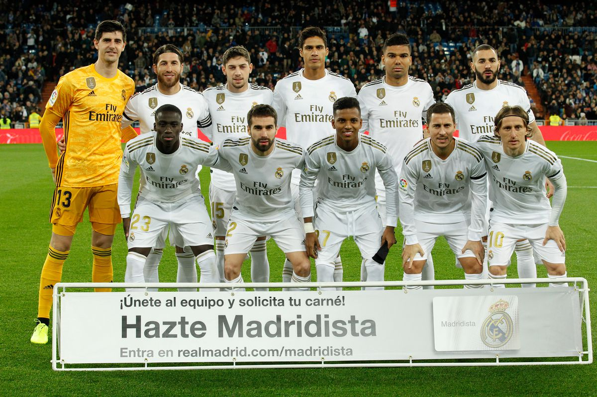
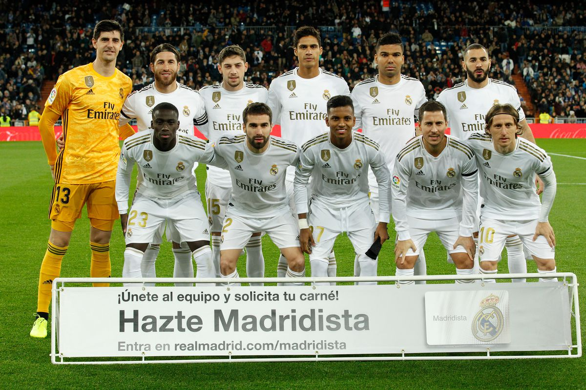

Real Madrid, is a Spanish professional football club based in Madrid.
Real Madrid established itself as a major force in both Spanish and European football during the 1950s, winning five consecutive European Cups and reaching the final seven times.
This success was replicated in the league, which the club won five times in the space of seven years. This team, which included Alfredo Di Stéfano, Ferenc Puskás, Francisco Gento, and Raymond Kopa, is considered by some in the sport to be the greatest team of all time.
In domestic football, the club has won 66 trophies; a record 34 La Liga titles, 19 Copa del Rey, 11 Supercopa de España, a Copa Eva Duarte, and a Copa de la Liga. In European and worldwide competitions, Real Madrid have won a record 26 trophies; a record 13 European Cup/UEFA Champions League titles, two UEFA Cups and four UEFA Super Cups. In international football, they have achieved a record seven club world championships
Real Madrid was recognised as the FIFA Club of the 20th Century on 11 December 2000 with 42.35% of the vote, and received the FIFA Centennial Order of Merit on 20 May 2004.
The club was also awarded Best European Club of the 20th Century by the IFFHS on 11 May 2010.
In June 2017, the team succeeded in becoming the first club to win consecutive Champions League titles, then made it three in a row and four in five seasons in May 2018, extending their lead atop the UEFA club rankings.
Real Madrids stadium is called the Santiago Brnabau is the largest stadium in Europe. The club's highest home attendance was 120,000 in a European Cup quarter-final against Juventus on 3 March 1986.The modernisation of Camp Nou during the 1990s and the introduction of all-seater stands means the record will not be broken for the foreseeable future as the current capacity of the stadium is 99,354.
Real Madrid current starting squad are: Thibut Curtois, Sergio Ramos, Varane, Carvakal, Marcelo, Luka Modrich, Tony Kross, Isco, Vinisus JR, Karim Benzema.
 
